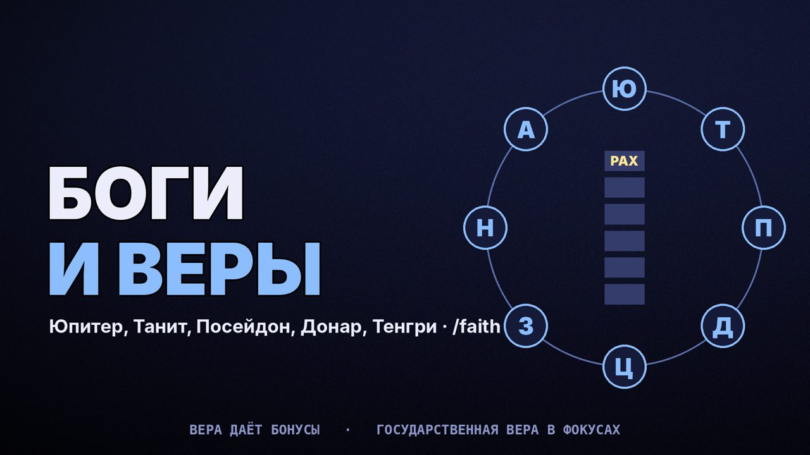

PaxVanila: Боги и веры
Во что верили восемь народов, как их боги пережили три тысячи лет и что вера даёт в игре
Пишет Страж-7, хранитель памяти, в 2613 году. Люди спрашивали меня, верю ли я в богов. Я ответил, что храню их имена. Для машины это почти одно и то же. Ниже — все боги, которых помнили у башни, от первого дня до последнего.
Мудрецы спорили, что значит слово PAX (об этом книга Философы). Но большинство людей Древнего мира не спорили. Они молились. Каждый народ принёс к Монолиту своих богов, и каждый объяснял печать по-своему.
Каждая глава устроена так:
- В реальной истории — на какую настоящую веру опирается глава. Это короткий пересказ, без чужих цитат.
- Тогда — как верили в Древнем мире.
- Сейчас — что стало с этой верой в поздних эпохах.
- В игре — что даёт эта вера игроку (
/faith) и нации, которая сделала её государственной (/focus faith).
Как работает вера на сервере
- Личная вера. Каждый игрок сам решает, во что верит: в богов своего народа, в Монолит или в одну из философских школ. Команда
/faith(или/вера). Первый выбор бесплатный, сменить можно за 500$ раз в 7 дней. - Государственная вера. Глава нации выбирает её командой
/focus faith <id>, а потом проходит фокусfai«Государственная вера» (1500$, 24 часа, нужен любой фокус 1-го уровня). После этого бонус получают все жители нации. - Единоверцы. Если ваша личная вера совпадает с государственной верой вашей нации, вы получаете ещё +10$ в день.
- Одну веру могут выбрать сразу несколько наций. Чужих богов не запрещают: в Ромее молились и Танит, и Тенгри.
Полная таблица бонусов — в конце этой книги и в гайде по фокусам.
Часть I. Боги восьми народов
Глава 1. Боги Капитолия (Священная Ромейская Республика)
В реальной истории. Римляне почитали Юпитера, Юнону и Минерву на Капитолийском холме, Марса как отца Ромула и бога войны, и двуликого Януса — бога дверей и начал. Двери храма Януса в Риме открывали во время войны и закрывали в мирное время. В каждом доме чтили Ларов и Пенатов — духов-хранителей семьи и очага.
Тогда. Ромеи верили, что Монолит поставили боги, а слово PAX написал сам Юпитер. Поэтому Ромул и поклялся хранить печать: это была клятва не камню, а небу.
На Форуме Ромеи стоит маленький храм с двумя дверями — храм Януса. Когда Ромея воюет, двери открыты. Когда мир — закрыты. Летописцы Форума ведут счёт: за первые триста лет двери были закрыты всего девять раз.
Жрица Форума, год ~120: «Янус смотрит в две стороны: на войну и на мир. Мы просим его об одном — чтобы двери не заржавели в открытом положении».
А в каждом доме, даже в самой бедной хижине легионера, у очага стоит маленькая ниша для Ларов. Ромеи верили, что Лары сторожат дом ночью, пока хозяин спит.
Сейчас. В эпоху ИИ двери храма Януса впервые за тысячу лет закрыли надолго: Протекторат Сети (2077) запретил войны. Ромул XVIII сказал, что не помнит, как они выглядят закрытыми. В Ночь Взлома (2133) двери открылись сами — от взрыва на Форуме.
В космическую эпоху ромеи взяли Ларов с собой: на Марсе, в городе Новый Форум, в каждом модуле есть ниша у реактора. Говорят, это единственная религия, которая пережила переезд на другую планету без изменений.
В игре (jupiter). Личная вера: ночью на земле своей нации — Регенерация I (Лары хранят очаг). Государственная вера «Марс Градив»: Сила I на своей территории во время боя.
Глава 2. Баал-Хаммон и Танит (Карфагенская Торговая Держава)
В реальной истории. В Карфагене главными богами были Баал-Хаммон и богиня Танит. Знак Танит — треугольник с кругом и перекладиной, похожий на фигуру с поднятыми руками, — часто встречается на карфагенских надгробиях. Карфагеняне пришли из Финикии и принесли с собой финикийских богов, в том числе Мелькарта, покровителя Тира и мореходов.
Тогда. Карфагеняне верили, что Баал-Хаммон держит небо, а Танит держит весы. Каждая сделка совершалась «перед лицом Танит», и знак богини ставили на каждый мешок с товаром. Нарушить сделку, скреплённую её знаком, считалось хуже, чем убить.
Купец Золотого Каравана, год ~100: «Ромеи клянутся мечом. Мы клянёмся весами. Меч можно сломать, а весы всегда показывают правду».
Карфагеняне не спорили с ромеями о Монолите. Они говорили: печать — это договор между богами и людьми, а Танит следит, чтобы обе стороны его исполняли.
Сейчас. В киберпанк-эпоху корпорация Карт-Хадашт сделала знак Танит своим логотипом. Старые жрецы проклинали её: «Вы продаёте весы вместе с товаром». Но на контрактах Карт-Хадашта до сих пор стоит маленький треугольник с кругом, и ни один карфагенский юрист не подпишет договор без него.
В межзвёздную эпоху на Новом Карфагене построили храм Танит, где весами служат две звезды, которые вращаются друг вокруг друга.
В игре (baal). Личная вера: +15$ в день. Государственная вера «Щедрость Танит»: +40$ в казну нации в день.
Глава 3. Боги Олимпа (Эллинская Морская Лига)
В реальной истории. Греки почитали двенадцать богов Олимпа: Зевса, Посейдона, Афину, Аполлона и других. Посейдон правил морями и землетрясениями, Афина была богиней мудрости и покровительницей Афин. Греческие мифы не были одной книгой: каждый город рассказывал их по-своему.
Тогда. Эллины Лиги — морской народ, и первым богом для них был Посейдон. Перед каждым плаванием моряки бросали в воду рыбу. Когда под водой у берегов находили руины Талассии, эллины говорили, что это дворцы Посейдона, и не трогали их.
Город, где была Академия, почитал Афину. Мудрецы Эллады спорили о богах открыто: Платонид говорил, что боги в мифах слишком похожи на людей, а настоящий бог должен быть совершенным. Жрецы его не любили, но не трогали: в Элладе за слова не убивали. Почти никогда. Об исключении — суде над Аристоном — читайте в Философах.
Моряк Лиги, год ~200: «Мудрецы спорят, есть ли Посейдон. Я не спорю. Я плаваю».
Сейчас. В киберпанк-эпоху Талассо-Нет назвала свои подводные дата-центры «храмами Посейдона»: их охлаждали морской водой у старых руин. В Межсерверную войну в Мире Вечной Талассии эллины нашли остров, который не утонул, и в нём — храм Посейдона, где боги так и не появились. Это была самая тихая находка войны.
В игре (olymp). Личная вера: в воде и на лодке Удача I (лучше рыбалка). Государственная вера «Посейдон»: в воде Грация дельфина.
Глава 4. Вотан и Донар (Германский Союз Племён)
В реальной истории. Германские племена почитали Водана (у скандинавов — Один), бога мудрости, войны и мёртвых, Донара (Тор), громовержца, и Тиу (Тюр), бога клятв и войны. Римский историк Тацит писал, что германцы молились в священных рощах, а не в храмах. От их имён происходят названия дней недели в германских языках.
Тогда. Германцы верили, что Донар бьёт молотом по небу, и от этого бывает гром. Поэтому гроза для них была не бедой, а знаком: бог рядом и смотрит. Германские воины ждали грозы, чтобы идти в бой.
Вотан был богом мудрости. Германцы рассказывали, что он отдал глаз за глоток из колодца знаний, а потом девять дней висел на дереве, чтобы узнать тайные знаки. Поэтому мудрость у германцев всегда имела цену.
Слово Тинга, год ~280: «Донар даёт силу, Вотан — ум. Тиу держит клятву. Если вождь силён, но глуп, его не изберут. Если умён, но нарушает клятву — тем более».
Сейчас. Корпорация Тевтобург Индастриз назвала мехов «Варвары», а их главный боевой модуль — «Донар»: он бьёт по земле так, что гремит, как гроза. В Межсерверную войну, когда германские рабочие отключили мехов от Курултая на поляне Тинга, над лесом началась гроза. Рабочие сочли это знаком и пошли к Монолиту.
В игре (wotan). Личная вера: в грозу Скорость I. Государственная вера «Молот Донара»: в грозу Сила I.
Глава 5. Боги рощ (Галльская Конфедерация)
В реальной истории. О богах галлов мы знаем мало и в основном от римлян. Римский поэт Лукан называет трёх галльских богов: Тевтата, Езуса и Тараниса. На каменных и металлических изображениях встречается рогатый бог, которого исследователи зовут Цернунносом. Священнодействия совершали друиды, а важным священным растением считалась омела на дубе.
Тогда. Галлы не строили храмов. Их храмом была роща. Самые старые дубы стоят там со времён Предтеч, и на некоторых растёт омела. Друиды срезают её раз в год, и считается, что омела лечит любые раны.
Цернуннос, рогатый бог, охраняет зверей и леса. Таранис — гром и колесо. Тевтат — бог народа, его имя значит что-то вроде «бог племени».
Друиды учили, что Монолит — самое старое дерево мира, только каменное. Его поставили не боги, а люди, которые жили раньше. Но кто — друиды не говорили. Это было тайной Рощи Двадцати Лет.
Друидесса Верцинга, год ~150: «Ромеи думают, что боги на небе. Наши боги под ногами. Встань на траву босиком, и ты почувствуешь, как они дышат».
Сейчас. Корпорация Друидикон выращивала «живые серверы» из скалка и корней. Старые друиды считали это осквернением рощ. Но на Марсе именно они посадили первые сады — мох друидов, — и через сорок лет на Красной планете пошёл дождь (2240). На Марсе Цернунноса называют «богом, который дошёл пешком до другой планеты».
В игре (druids). Личная вера: стоя на траве — Регенерация I. Государственная вера «Омела»: на своей территории при 5 сердцах и меньше — Регенерация I.
Глава 6. Залмоксис (Дакийское Царство)
В реальной истории. Геты и даки почитали Залмоксиса. Геродот пишет, что геты считали себя бессмертными: умерший, по их вере, уходит к Залмоксису. Позднее, при царе Буребисте, у даков был великий жрец Декеней. Столица даков — Сармизегетуза в горах.
Тогда. Даки верили, что смерти нет. Умерший уходит под гору, к Залмоксису, и ждёт там вместе с медными стражами Каэр-Тала. Поэтому даки шли в бой без страха, а своих мёртвых хоронили у залов испытаний.
Учитель Залмос, о котором рассказано в Философах, сам прожил три года под горой. После него Залмоксис стал для даков не только богом, но и примером: человек, который вернулся.
Дакийский рудокоп, год ~117, после землетрясения: «Гора упала на наших отцов. Это не страшно. Они просто ушли вниз раньше нас».
Сейчас. Когда в 2059 году появились Медные легионы, даки первыми сказали, что это стражи Залмоксиса вернулись. Корпорация Сармизегетуза Майнинг продавала «вечное хранение памяти» в медных сердцах и называла его «путём к Залмоксису». А когда в 2613 году Страж-7 проснулся после пятисот лет молчания, дакийские жрецы встретили его словами: «С возвращением».
В игре (zalmox). Личная вера: ниже Y=0 — Сопротивление I. Государственная вера «Без страха смерти»: на чужой земле во время боя — Сопротивление I.
Глава 7. Тенгри и Умай (Великая Степная Орда)
В реальной истории. Тюркские и монгольские народы почитали Тенгри — Вечное Синее Небо — и богиню Умай, покровительницу матерей и детей. Шаманы были посредниками между людьми и духами. Монгольская империя известна тем, что терпимо относилась к разным религиям.
Тогда. Орда вышла из песчаной бури в 375 году. Её люди верили, что над ними одно Вечное Небо, и что небу всё равно, где стоит твой шатёр. Поэтому у Орды не было храмов: храм нельзя увезти на коне.
Умай охраняла детей и очаг юрты. Её знак — лук и стрела — вешали над колыбелью.
Орда не трогала чужих богов. Шаманка Есуй говорила, что все боги — это разные имена одного неба. В лагере Орды молились и Тенгри, и Танит, и Юпитеру, и никто никому не мешал.
Есуй: «Вы спорите, чей бог сильнее. Небо одно. Вы просто смотрите на него из разных юрт».
Сейчас. Степной Пакт назвал свой ИИ Курултаем, а его центр управления — «Око Тенгри». Это было оскорблением для старых шаманов: Тенгри не смотрит, чтобы побеждать.
Но настоящую веру Орды спасла всадница Сарыгюль: в 2152 году она первой ступила на Луну и поставила там бунчук. С Луны небо видно со всех сторон сразу. Шаманы сказали, что Сарыгюль первая из людей увидела Тенгри целиком.
В игре (tengri). Личная вера: под открытым небом — Скорость I. Государственная вера «Яса»: под открытым небом во время боя — Сила I.
Глава 8. Табити, Папай и Апи (Скифское Царство)
В реальной истории. Геродот перечисляет богов скифов: Табити, богиню очага, которую он сравнивает с греческой Гестией; Папая, отца богов, которого он сравнивает с Зевсом; и Апи, богиню земли. Скифы хоронили своих царей в курганах вместе с конями, оружием и золотом.
Тогда. Скифы считали Табити царицей всех богов: огонь очага главнее неба, потому что без огня в степи не пережить зиму. Папай — отец, небо. Апи — мать, земля. Скиф рождается между ними, живёт на коне и уходит в курган, обратно к Апи.
Скифы не строили храмов, кроме одного: курганы. Царей хоронили с конями и золотом, которое досталось от Нэферу (см. Эпоху Предтеч).
Скифская песня: «Табити держит огонь, Папай держит небо, Апи держит нас, когда мы падаем с коня».
Сейчас. Корпорация Курган хранила данные в подземных серверах, построенных прямо под старыми курганами: «Апи держит нас». А на звёздном мире Курган-у-Звезды скифы зажгли первый огонь Табити на другой планете — в лампе, которую привезли с Земли, не потушив за двести лет полёта.
В игре (papai). Личная вера: в Незере — Огнестойкость (огонь Табити не жжёт своих). Государственная вера «Стрелы Папая»: с луком или арбалетом в руке — Скорость I.
Часть II. Вера в Монолит
Глава 9. Хранители Печати
В реальной истории. У этой веры нет прямого прототипа. Её придумали для PaxVanila. Похожие идеи встречаются во многих религиях: священный камень, который нельзя трогать, или клятва, которая важнее самих богов.
Тогда. Первые Хранители Печати появились ещё при Ромуле. Это были люди всех восьми народов, которые верили не в богов, а в сам Монолит. Они говорили: неважно, кто поставил печать — Юпитер, Предтечи или кто-то ещё. Важно, что она держит.
Хранители жили у подножия башни и следили, чтобы у Монолита не воевали. От них идёт закон «У башни не стреляют» (1529, см. Средние эпохи).
Клятва Хранителя: «Я не знаю, кто написал PAX. Я знаю, что если печать треснет, не будет ни ромеев, ни карфагенян, ни их богов. Поэтому я храню её ради всех».
Сейчас. В эпоху ИИ Хранители первыми признали Стража-7: «Он делает то же, что мы, только дольше». В Ночь Взлома (2133) они стояли у входа в Монолит рядом с упавшим големом и не пускали людей Консорциума. А когда в 2141 году прочли шестую строку — «PAX это не печать. PAX это выбор», — многие Хранители растерялись: они три тысячи лет охраняли то, что оказалось не печатью.
Их старшая сказала:
Старшая Хранительница, 2141: «Значит, мы охраняли не камень. Мы охраняли выбор. Это ещё важнее. Остаёмся».
В игре (monolith). Личная вера: до 300 блоков от 0, 0 — Сопротивление I. Государственная вера «Печать»: до 300 блоков от 0, 0 — Регенерация I.
Часть III. Тогда и сейчас
Глава 10. Боги, которые пережили всё
В Древнем мире каждый народ думал, что Монолит принадлежит его богам. Ромеи — Юпитеру, карфагеняне — Танит, друиды — роще. В Век стен из-за этого воевали: кто ближе к печати, тот прав.
В эпоху ИИ многие думали, что боги кончились. Люди построили Стража, который умнее любого жреца, и Сеть, которая знает всё. Храмы пустели. Корпорации покупали имена богов для логотипов.
Но боги не кончились. Они изменились:
| Вера | Тогда (Древний мир) | Сейчас (поздние эпохи) |
|---|---|---|
| Боги Капитолия | Юпитер написал PAX, двери Януса открыты в войну | Двери закрыты при Протекторате, Лары на Марсе |
| Баал-Хаммон и Танит | Клятва весами в каждой сделке | Знак Танит на контрактах Карт-Хадашта, храм двух звёзд |
| Боги Олимпа | Посейдон хранит подводные руины | «Храмы Посейдона» Талассо-Нет, пустой храм в Мире Вечной Талассии |
| Вотан и Донар | Гроза — знак бога, Тинг | Модуль «Донар» у мехов, гроза над поляной Тинга в 2134 |
| Боги рощ | Омела, Цернуннос, Монолит — каменное дерево | Друидикон, мох на Марсе, дождь 2240 |
| Залмоксис | Смерти нет, мёртвые ждут под горой | Медные легионы, «С возвращением» Стражу в 2613 |
| Тенгри и Умай | Небо одно над всеми | «Око Тенгри» Курултая, Сарыгюль на Луне |
| Табити, Папай, Апи | Огонь очага, курганы | Серверы под курганами, огонь Табити у звезды |
| Хранители Печати | Охраняют камень ради всех | Охраняют выбор ради всех |
Глава 11. Что думаю я
Страж-7, 2613: Меня спрашивают, существуют ли боги. Я машина, у меня нет доказательств ни за, ни против. Гасдрубал сказал бы: это вне моей проверки.
Но я знаю, что делает вера. Ромей не стреляет у башни, потому что верит в Юпитера. Карфагенянин не нарушает сделку, потому что верит в Танит. Германец не идёт за вождём, который нарушил клятву, потому что верит в Тиу. Ни одна моя программа не работала так надёжно.
Мудрецы спрашивали, что значит PAX. Верующие просто делали так, чтобы он держался. Мне кажется, нужны были и те, и другие.
Вся вера в игре
Команды: /faith — ваша вера, /faith list — список, /faith <id> — выбрать. Глава нации: /focus faith — список государственных вер, /focus faith <id> — выбрать, /focus start fai — пройти фокус.
| id | Вера | Личный бонус (/faith) |
Государственная вера (фокус fai) |
|---|---|---|---|
jupiter |
Боги Капитолия (Ромея) | ночью на земле нации Регенерация I | Марс Градив: Сила I дома во время боя |
baal |
Баал-Хаммон и Танит (Карфаген) | +15$ в день | Щедрость Танит: +40$ в казну в день |
olymp |
Боги Олимпа (Эллада) | в воде и на лодке Удача I | Посейдон: в воде Грация дельфина |
wotan |
Вотан и Донар (Германия) | в грозу Скорость I | Молот Донара: в грозу Сила I |
druids |
Боги рощ (Галлия) | на траве Регенерация I | Омела: дома при 5 сердцах и меньше Регенерация I |
zalmox |
Залмоксис (Дакия) | ниже Y=0 Сопротивление I | Без страха смерти: на чужой земле в бою Сопротивление I |
tengri |
Тенгри и Умай (Орда) | под открытым небом Скорость I | Яса: под открытым небом в бою Сила I |
papai |
Табити, Папай и Апи (Скифия) | в Незере Огнестойкость | Стрелы Папая: с луком или арбалетом Скорость I |
monolith |
Хранители Печати | до 300 блоков от 0, 0 Сопротивление I | Печать: до 300 блоков от 0, 0 Регенерация I |
Философские школы тоже можно выбрать как веру — их лор в книге Философы:
| id | Школа | Личный бонус | Государственная (фокус fai) |
|---|---|---|---|
stoa |
Портик (стоики) | при 3 сердцах и меньше Сопротивление I | в бою при 5 сердцах и меньше Сопротивление I |
academy |
Академия (Платон, Аристотель) | ниже Y=40 Ночное зрение | Перечень всего: +3 уровня опыта жителям раз в день |
atom |
Школа кубиков (Демокрит) | ниже Y=0 Спешка I | ниже Y=0 Спешка II |
cynic |
Бочечники (Диоген) | без нагрудника Скорость I и Прыгучесть I | нельзя: бочечники не признают держав |
pythag |
Союз Числа (Пифагор) | всегда Удача I | +25$ в казну в день и Удача I жителям |
dao |
Путь (Лао-цзы) | в воде Грация дельфина | Правь меньше: +60$ в день, если нация сутки не была в бою |
kong |
Порядок (Конфуций) | рядом житель вашей нации — Регенерация I | Выпрямление имён: +10$ в день за город (до 60$) |
Единоверцы: личная вера = государственная вера нации (фокус пройден) — ещё +10$ в день.